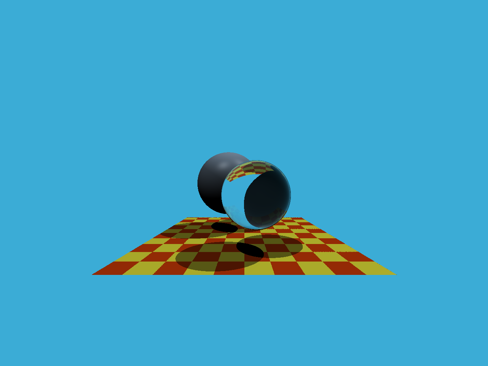

作业5-光线与三角形相交
这是我完成作业5时候的笔记，一部分内容来自于GAMES101的作业说明文档。
1 总览
在这部分的课程中，我们将专注于使用光线追踪来渲染图像。在光线追踪中最重要的操作之一就是找到光线与物体的交点。一旦找到光线与物体的交点，就可以执行着色并返回像素颜色。在这次作业中，我们需要实现两个部分：光线的生成和光线与三角的相交。本次代码框架的工作流程为：
- 从 main 函数开始。我们定义场景的参数，添加物体（球体或三角形）到场景中，并设置其材质，然后将光源添加到场景中。
- 调用 Render(scene) 函数。在遍历所有像素的循环里，生成对应的光线并将返回的颜色保存在帧缓冲区（framebuffer）中。在渲染过程结束后，帧缓冲区中的信息将被保存为图像。
- 在生成像素对应的光线后，我们调用 CastRay 函数，该函数调用 trace 来查询光线与场景中最近的对象的交点。
-
然后，我们在此交点执行着色。我们设置了三种不同的着色情况，并且已经为你提供了代码。
你需要修改的函数是： -
Renderer.cpp 中的 Render()：这里你需要为每个像素生成一条对应的光线，然后调用函数 castRay() 来得到颜色，最后将颜色存储在帧缓冲区的相应像素中。
- Triangle.hpp 中的 rayTriangleIntersect(): v0, v1, v2 是三角形的三个顶点，orig 是光线的起点，dir 是光线单位化的方向向量。tnear, u, v 是你需要使用我们课上推导的 Moller-Trumbore 算法来更新的参数。
2 项目解读
现在我们对代码框架中的一些类做一下概括性的介绍：
- global.hpp：包含了整个框架中会使用的基本函数和变量。
- Vector.hpp: 由于我们不再使用 Eigen 库，因此我们在此处提供了常见的向量操作，例如：dotProduct，crossProduct，normalize。
- Object.hpp: 渲染物体的父类。Triangle 和 Sphere 类都是从该类继承的。
- Scene.hpp: 定义要渲染的场景。包括设置参数，物体以及灯光。
- Renderer.hpp: 渲染器类，它实现了所有光线追踪的操作。
运行程序最终会产生一个ppm格式的文件，使用vscode的插件 PBM/PPM/PGM Viewer for Visual Studio Code可以预览ppm文件
3 我的实现
3.1 屏幕坐标到空间坐标
//i表示水平向右的x轴坐标，j表示竖直向下的y轴坐标
for (int j = 0; j < scene.height; ++j)
{
for (int i = 0; i < scene.width; ++i)
{
// generate primary ray direction
float x;
float y;
// TODO: Find the x and y positions of the current pixel to get the direction
// vector that passes through it.
// Also, don't forget to multiply both of them with the variable *scale*, and
// x (horizontal) variable with the *imageAspectRatio*
// 需要进行坐标转化，把屏幕坐标转化为空间坐标
x = (2 * ((float)i) / scene.width - 1) * scale * imageAspectRatio;
y = -(2 * ((float)j) / scene.height - 1) * scale;
//光线的方向向量，向z轴负方向发出光线
Vector3f dir = Vector3f(x, y, -1); // Don't forget to normalize this direction!
// 参数(摄像机位置，光线方向，场景，递归深度)
framebuffer[m++] = castRay(eye_pos, dir, scene, 0);
}
UpdateProgress(j / (float)scene.height); //用于显示进度条
}
视角fov
视角（field-of-view），fovY为垂直视场角，fovX为水平视场角，此课程中fov默认为垂直视场角，即fovY；

忘记对dir向量归一化
上面的代码忘记对dir向量进行归一化，修复前后的渲染结果中玻璃球的边缘不同
修复前

修复后

修复bug的方法是加上一条归一化的语句
dir = normalize(dir);
3.2 光线与三角形相交
光线与三角形的交点还可以判断光源是否在物体内；
先判断光线和三角形所在平面是否相交，再判断交点点是否在三角形内；也可以通过重心坐标直接得到（Möller Trumbore Algorithm）；
对于方程
定义
有解
光线和三角形所在平面相交需要满足 \(t>0\)
交点在三角形内需要满足\(b_1\ge0,\ b_2\ge0,\ b_1+b_2\le 1\)
格子面上出现蓝色像素点

可以看到图片中蓝色像素点都位于平面的对角线上，这也印证了出错原因。
这时因为，当相交判定的条件为$b_1>0,\ b_2>0,\ b_1+b_2< 1$，光线与三角形面的边相交时会被认为与三角面没有交点，所以显示出了背景颜色（即蓝色）
修复BUG之后得到了正确的结果

第一次实现代码为
bool rayTriangleIntersect(const Vector3f& v0, const Vector3f& v1, const Vector3f& v2, const Vector3f& orig,
const Vector3f& dir, float& tnear, float& u, float& v)
{
// TODO: Implement this function that tests whether the triangle
// that's specified bt v0, v1 and v2 intersects with the ray (whose
// origin is *orig* and direction is *dir*)
// Also don't forget to update tnear, u and v.
Vector3f e1 = v1 - v0;
Vector3f e2 = v2 - v0;
Vector3f s = orig - v0;
Vector3f s1 = crossProduct(dir, e2);
Vector3f s2 = crossProduct(s, e1);
float denominator = dotProduct(s1, e1);
tnear = dotProduct(s2, e2) / denominator;
u = dotProduct(s1, s) / denominator;
v = dotProduct(s2, dir) / denominator;
// 判断光线和三角形所在平面是否相交，再判断交点点是否在三角形内
return tnear>0 && u>=0 && v>=0 && u+v<=1;
}
这个代码虽然能够正确运行，但是却有很多风险和缺陷。
更加规范正确的代码应该像下面这样
bool rayTriangleIntersect(const Vector3f& v0, const Vector3f& v1,
const Vector3f& v2, const Vector3f& orig,
const Vector3f& dir, float& tnear, float& u, float& v)
{
Vector3f edge1 = v1 - v0;
Vector3f edge2 = v2 - v0;
Vector3f pvec = crossProduct(dir, edge2);
float det = dotProduct(edge1, pvec);
// 1. 提前检测：det=0表示射线与三角形平面平行；det<0表示射线从三角形背面入射（单面剔除）
if (det == 0 || det < 0)
return false;
Vector3f tvec = orig - v0;
u = dotProduct(tvec, pvec);
// 2. 延迟除法：先比较未归一化的u（避免除以det放大误差）
if (u < 0 || u > det)
return false;
Vector3f qvec = crossProduct(tvec, edge1);
v = dotProduct(dir, qvec);
// 3. 同样延迟除法，检查v的边界
if (v < 0 || u + v > det)
return false;
// 4. 最后统一做除法（仅当所有边界都满足时）
float invDet = 1 / det;
tnear = dotProduct(edge2, qvec) * invDet;
u *= invDet;
v *= invDet;
if( tnear <0)
return false;
return true;
}
这个版本的代码有如下优势
- 无除零风险：提前检测
det==0(射线平行于三角形平面)，直接返回false，避免后续1/det的除零错误 - 数值精度更高：遵循“延迟除法”原则，先把未归一化的
u/v与det比较，最后统一除以det,避免过早除法放大浮点误差，尤其是当det的绝对值极小的时候。 - 边界条件完整：
det<0实现背面剔除，只检测射线从三角形正面入射的情况- 提前检测
u/v的范围，减少无效运算
- 逻辑严谨：只有当所有相交条件满足时，才更新
tnear/u/v,避免返回无效值。
三角形的背面
三角形本身是二维面片，没有天然的正反。但是计算机图形学中有一个约定俗成的规定：三角形的正反由定地点排列顺序(绕序)通过右手定则定义。
直观判断方法是：右手四指绕v0->v1->v2的逆时针方向弯曲，大拇指指向的方向就是法向量n（正面）的方面。
抽象一点的计算步骤为
- 步骤 1：给定三角形的三个顶点 v0, v1, v2，按逆时针顺序（从三角形 “正面” 看过去）排列；
- 步骤 2：计算两条边向量 edge1 = v1 - v0、edge2 = v2 - v0；
- 步骤 3：用叉乘计算三角形的法向量 n = crossProduct(edge1, edge2)（叉乘结果的方向由右手定则决定）；
- 这个法向量 n 指向的一侧，就是三角形的正面；法向量的反方向（-n）指向的一侧，就是三角形的背面。

这里进行背面剔除用的表达式是det < 0
这里的
所以当det < 0时，说明光线的方向向量 \(dir\) 与 \(n\) 的方向一致，进而说明光线从三角面的背面穿过。
三矢量的混合积
三矢量的混合积 - 知乎
运算 \(( \boldsymbol{\mathbf{A}} \boldsymbol\times \boldsymbol{\mathbf{B}} ) \boldsymbol\cdot \boldsymbol{\mathbf{C}}\)被称为矢量 \(\boldsymbol{\mathbf{A}} , \boldsymbol{\mathbf{B}} , \boldsymbol{\mathbf{C}}\) 的混合积
混合积满足
记忆方法在变换乘积符号的过程中，三个矢量的轮盘相对顺序不变

4 最终结果
5 Cpp特性
5.1 make_unique
// 新建了一个球
auto sph1 = std::make_unique<Sphere>(Vector3f(-1, 0, -12), 2);
std::unique_ptr<Sphere> 表示一种数据类型，叫做独占式智能指针。
C++11 引入的独占式智能指针，负责自动管理动态分配的Sphere对象内存（无需手动delete，超出作用域时自动释放，避免内存泄漏），且同一时间只能有一个unique_ptr指向该对象（独占所有权）。这里Sphere是一个自定义类型。
std::make_unique<Sphere>(...)
C++14 新增的安全创建智能指针的函数（替代直接new Sphere(...)），作用是：
- 动态分配（
new）一个Sphere对象； - 自动将其包装为
std::unique_ptr<Sphere>并返回； - 避免 “内存泄漏风险”（比如异常场景下的未释放内存）。
5.2 成员初始化
Sphere(const Vector3f& c, const float& r)
: center(c)
, radius(r)
, radius2(r * r)
{}
成员初始化列表（冒号后面的部分）的作用是：在构造函数体执行前，直接初始化类的成员变量（比在构造函数体内赋值更高效，尤其对于自定义类型如
Vector3f）；
5.3 std::move()
std::move 并不是字面意义上的 “移动” 数据，它的核心作用是：将一个「左值」强制转换为「右值引用（rvalue reference）」，让编译器有机会调用「移动构造函数 / 移动赋值运算符」，从而实现资源的 “所有权转移”（而非拷贝），以此提升程序性能。
- 左值：有名字、能取地址的变量（比如
int a = 10;中的a）； - 右值：没有名字、不能取地址的临时对象（比如
10、std::string("hello")）； - 右值引用（
T&&）：专门绑定右值的引用类型，是实现移动语义的基础。
常规的 “拷贝” 操作对大对象（比如 std::vector、std::string）代价极高 —— 需要复制整块内存；而 “移动” 操作只需要转移资源的所有权（比如修改指针指向），几乎无开销。
但默认情况下，有名字的变量是左值，编译器会优先调用拷贝构造 / 赋值。std::move 的作用就是 “骗” 编译器：把这个左值当成右值处理，启用移动语义。
5.4 std::optional<>
std::optional：C++17 标准库提供的可选值容器（头文件 <optional>），用于表示 “可能存在、也可能不存在” 的值（解决传统用 nullptr/ 特殊值表示 “无值” 的问题，类型更安全）。
常用于 “操作可能失败 / 无结果” 的场景
评论
如果你已登录 GitHub，就可以直接在这里评论。